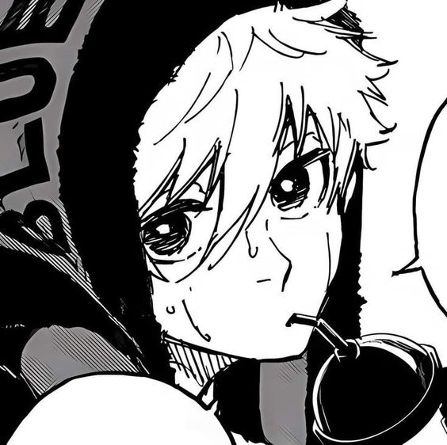

Seishiro Nagi
Forward
Seishiro Nagi ( 凪 なぎ 誠 せい 士 し 郎 ろう , Nagi Seishirō?) is a contender for the Blue Lock Project and the titular protagonist of the spin-off, Blue Lock - Episode Nagi, who currently plays as a rightwing for England's Manshine City in the Neo Egoist League.